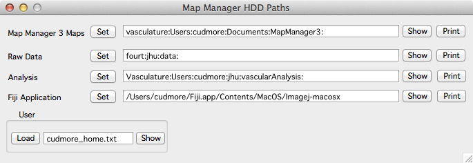

Fitting segments in Fiji
Line segments are fit in FIJI using Map Manager specified control points.
The version of Fiji is critical
You are required to use ImageJ 1.47v, this corresponds to the 'Fiji Life-Line version, 2013 July 15' on the main FIJI download page.
(1) Download ‘Fiji Life-Line version, 2013 July 15’
- Mac: http://fiji.sc/downloads/Life-Line/fiji-macosx-20130715.dmg
- Windows (64bit): http://fiji.sc/downloads/Life-Line/fiji-win64-20130715.zip
- Windows (32-bit): http://fiji.sc/downloads/Life-Line/fiji-win32-20130715.zip
Once downloaded and installed/uncompressed, drag and drop the Bob_Neurite_Tracer_v3.java plugin to the ‘plugins’ folder inside the newly created Fiji.app application folder.
Important. Do NOT put Fiji.app into any path with spaces. Do not put Fiji.app in 'Program Files'.
If you already have a newer version of Fiji installed, this is fine as two versions of Fiji can be installed. They just have to be in different hard-drive folders.
The reason we use this older version of Fiji is that newer versions of Fiji have undocumented changes to the backend JAVA programming interface. Until this is resolved, we will continue to use the older version of Fiji.
(2) Installing the ‘Bob_Neurite_Tracer_v3.java’ plugin
When you fit a line in Fiji from within Map Manager, you are using the Fiji plugin Bob_Neurite_Tracer_v3.java
To install this plugin
- Download Bob_Neurite_Tracer_v3.java or from our Github repository.
- Copy Bob_Neurite_Tracer_v3.java into your Fiji ‘plugins’ folder.
(3) Configuring Map Manager to fit a line In Fiji
You need to specify the location of your Fiji program from within Map Manager. This is most easily done using the Hard Drive Paths panel.
- Open the HDD Paths panel using the main menu ‘MapManager - Hard Drive Paths’.
- In the Map Manager HD Paths panel, specify the path to your Fiji Application with the corresponding Set button.
- In the main Options Panel, save the global options with the Save button. The next time Map Manager is run, it will remember and use this Fiji path.

Troubleshooting
If line fits do not work from within Map Manager, please check the following
- You are using the ‘Fiji Life-Line version, 2013 July 15’.
- Your Fiji.app folder can not be in a folder with any spaces or special characters in its path (this includes ‘Program Files’).
- You have downloaded and install the ‘Bob_Neurite_Tracer_v3.java’
- You have specified your Fiji path within Map Manager using ‘MapManager - Hard Drive Paths’.
The location of the Fiji program can also be specified in a Map Manager User File. The user file needs to contain a line like this…
# Specify the location of your Fiji executable.
# Please use 'Fiji Life-Line version, 2013 July 15'.
# mac
root:stackdb2:options:gFijiPath="/Users/cudmore/Fiji.app/Contents/MacOS/Imagej-macosx"
# windows
# root:stackdb2:options:gFijiPath="C:\Users\cudmore.linden-image2\Desktop\Fiji.app\fiji-win64.exe"
Make sure the actual Fiji executable exists. Don’t assume the name of Fiji is ‘fiji-win64.exe’, this name changes from version to version of Fiji. If there is an error in this path, there WILL be an error when fitting lines in Map Manager.